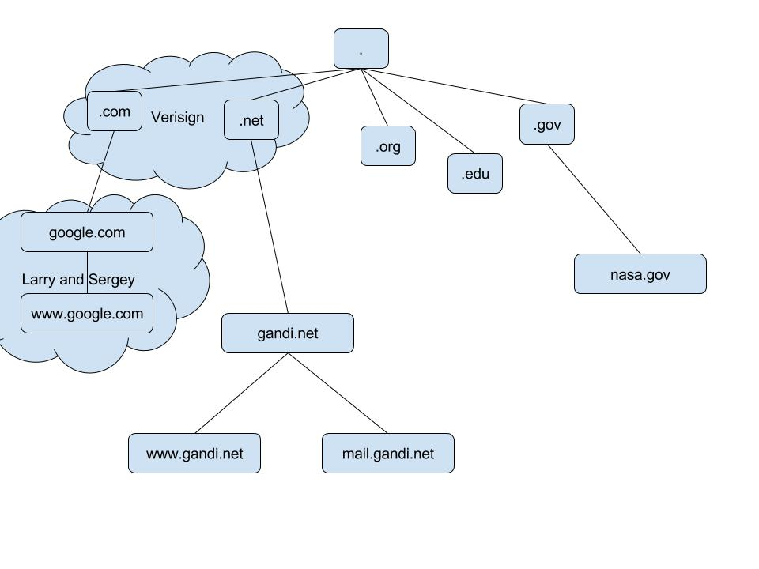

We at the NIC agree with Peter Deutsch's suggestion (in RFC# 606 / NIC#
21246) that the NIC maintain an online ASCII text file of Host names,
addresses, and attributes. That suggestion corresponds to one made by
Vint Cerf recently, and evidently receives ARPA/IPT support.
...
The ASCII file generated by the NIC will reside at Host OFFICE-1 (Host
Address = 43 decimal), and will have the pathname
[NETINFO]HOSTS.TXT
Using this pathname with an FTP process will enable anyone, of course,
to retrieve the file for use at any Network Host.
The login username for FTP can be GUEST,
password ARPA,
account 1.
;GIDNEY::HOSTS.TXT.5, 27-Mar-85 13:11:54, Edit by PAETZOLD
;GIDNEY::HOSTS.TXT.4, 25-Mar-85 13:56:55, Edit by PAETZOLD
;local stuff
; DoD Internet Host Table
; 22-Mar-85
; Version number 436
;
; Changes, corrections, comments or questions to (HOSTMASTER@SRI-NIC)
;
; The format of this file is documented in RFC 810, "DoD Internet
; Host Table Specification", which is available online at SRI-NIC
; as the file
; [SRI-NIC]RFC810.TXT
; It may be retrieved via FTP using username ANONYMOUS with
; any password.
;
; NOTE CAREFULLY: RFC 810 has been slightly revised since the original
; version was written. In particular, the version printed in the
; "Internet Protocol Transition Workbook" does not document the
; added "machine type" field (between the host-name and system-name
; fields).
;
; The format for entries is:
;
; NET : NET-ADDR : NETNAME :
; GATEWAY : ADDR, ADDR : NAME : CPUTYPE : OPSYS : PROTOCOLS :
; HOST : ADDR, ALTERNATE-ADDR (if any): HOSTNAME,NICKNAME : CPUTYPE :
; OPSYS : PROTOCOLS :
;
; Where:
;; ADDR = internet address in decimal, e.g., 26.0.0.73
;; CPUTYPE = machine type (PDP-11/70, VAX-11/780, FOONLY-F3, C/30, etc.)
;; OPSYS = operating system (UNIX, TOPS20, TENEX, ITS, etc.)
;; PROTOCOLS = transport/service (TCP/TELNET,TCP/FTP, etc.)
;; : (colon) = field delimiter
;; :: (2 colons) = null field
NET : 4.0.0.0 : SATNET-NETWORK :
NET : 6.0.0.0 : YPG-NET-TEMP :
NET : 7.0.0.0 : EDN-TEMP :
NET : 8.0.0.0 : BBN-NET-TEMP :
NET : 10.0.0.0 : ARPANET :
NET : 11.0.0.0 : DODIIS :
Network Working Group P. Mockapetris
Request for Comments: 882 ISI
November 1983
DOMAIN NAMES - CONCEPTS and FACILITIES
+-----------------------------------------------------+
| |
| This RFC introduces domain style names, their use |
| for ARPA Internet mail and host address support, |
| and the protocols and servers used to implement |
| domain name facilities. |
| |
| This memo describes the conceptual framework of the |
| domain system and some uses, but it omits many |
| uses, fields, and implementation details. A |
| complete specification of formats, timeouts, etc. |
| is presented in RFC 883, "Domain Names - |
| Implementation and Specification". That RFC |
| assumes that the reader is familiar with the |
| concepts discussed in this memo. |
| |
+-----------------------------------------------------+
INTRODUCTION
The need for domain names
As applications grow to span multiple hosts, then networks, and
finally internets, these applications must also span multiple
administrative boundaries and related methods of operation
(protocols, data formats, etc). The number of resources (for
example mailboxes), the number of locations for resources, and the
diversity of such an environment cause formidable problems when we
wish to create consistent methods for referencing particular
resources that are similar but scattered throughout the
environment.
The ARPA Internet illustrates the size-related problems; it is a
large system and is likely to grow much larger. The need to have
a mapping between host names (e.g., USC-ISIF) and ARPA Internet
addresses (e.g., 10.2.0.52) is beginning to stress the existing
mechanisms. Currently hosts in the ARPA Internet are registered
with the Network Information Center (NIC) and listed in a global
table (available as the file [NETINFO]HOSTS.TXT on the SRI-NIC
host) [1]. The size of this table, and especially the frequency
of updates to the table are near the limit of manageability. What
is needed is a distributed database that performs the same
function, and hence avoids the problems caused by a centralized
database.
Name all the things
Name all the things, Network Solutions gets the .com (and others..)
Name all the things, delegate to Larry

Name all the things, delegate to Gandi
"." is a little bit special, is it
And now everyone adds a server to handle their zones
; <<>> DiG 9.9.5-9ubuntu0.5-Ubuntu <<>> gandi.net A @dns0.gandi.net
;; global options: +cmd
;; Got answer:
;; ->>HEADER<<- opcode: QUERY, status: NOERROR, id: 1413
;; flags: qr aa rd; QUERY: 1, ANSWER: 1, AUTHORITY: 5, ADDITIONAL: 10
;; WARNING: recursion requested but not available
;; OPT PSEUDOSECTION:
; EDNS: version: 0, flags:; udp: 4096
;; QUESTION SECTION:
;gandi.net. IN A
;; ANSWER SECTION:
gandi.net. 86400 IN A 217.70.184.1
;; AUTHORITY SECTION:
gandi.net. 86400 IN NS dns2.gandi.net.
gandi.net. 86400 IN NS dns4.gandi.net.
gandi.net. 86400 IN NS dns3.gandi.net.
gandi.net. 86400 IN NS dns0.gandi.net.
gandi.net. 86400 IN NS dns1.gandi.net.
;; ADDITIONAL SECTION:
dns0.gandi.net. 86400 IN A 217.70.177.39
dns0.gandi.net. 86400 IN AAAA 2001:4b98:d:1::39
dns1.gandi.net. 86400 IN A 217.70.177.45
dns1.gandi.net. 86400 IN AAAA 2001:4b98:d:1::45
dns2.gandi.net. 86400 IN A 217.70.183.211
dns2.gandi.net. 86400 IN AAAA 2001:4b98:d:589::211
dns3.gandi.net. 86400 IN A 217.70.184.14
dns4.gandi.net. 86400 IN A 217.70.186.184
dns4.gandi.net. 86400 IN AAAA 2001:4b98:dc2:90:217:70:186:184
;; Query time: 151 msec
;; SERVER: 217.70.177.39#53(217.70.177.39)
;; WHEN: Mon Feb 22 11:31:28 PST 2016
;; MSG SIZE rcvd: 341
@ IN SOA dns.gandi.net. hostmaster.gandi.net. (
1419475273 ; serial
10800 ; refresh (3 hours)
3600 ; retry (1 hour)
604800 ; expire (1 week)
10800 ; minimum (3 hours)
)
;; NS, MX entries at apex
IN NS a.dns.gandi.net.
NS b.dns.gandi.net.
NS c.dns.gandi.net.
MX 10 spool.mail.gandi.net.
MX 50 fb.mail.gandi.net.
;; Cheap load balancer
www A 10.5.3.1
A 10.5.3.2
;; Short TTL override
temporary 30 IN A 127.0.0.3
$ORIGIN seemingly.invalid.tfz.net.
@ 10800 IN CNAME 217.70.184.38
217.70.184.38 300 IN A 217.70.184.38
The resolver:
/----------\
| Client |
| Computer |
\----------/
The resolver asking the recursive caching nameserver
/----------\ /-------------\
| Client | => Q? "www.domain.com" Type=A ==> | Campus |
| Computer | | Name Server |
\----------/ \-------------/
The resolver getting a reply from the recursive NS
/----------\ /-------------\
| Client | <= A "www.domain.com" 1.2.3.4 <== | Campus |
| Computer | | Name Server |
\----------/ \-------------/
You, typing "www.domain.com":
/----------\
| Client |
| Computer |
\----------/
You, typing "www.domain.com":
/----------\ /-------------\
| Client | => Q? "www.domain.com" Type=A ==> | Campus |
| Computer | | Name Server |
\----------/ \-------------/
(You, waiting)
/----------\ /-------------\
| Client | => Q? "www.domain.com" Type=A ==> | Campus |
| Computer | | Name Server |
\----------/ \-------------/
|
? www.domain.com
v
/-------------\
| . (gods) |
| Name Server |
\-------------/
(You, still waiting)
/----------\ /-------------\
| Client | => Q? "www.domain.com" Type=A ==> | Campus |
| Computer | | Name Server |
\----------/ \-------------/
^
DUNNO ASK TO .COM
|
/-------------\
| . (gods) |
| Name Server |
\-------------/
(You, still waiting)
/----------\ /-------------\
| Client | => Q? "www.domain.com" Type=A ==> | Campus |
| Computer | | Name Server |
\----------/ \-------------/
|
kthxbye :/
v
/-------------\
| . (gods) |
| Name Server |
\-------------/
(You, still waiting)
/----------\ /-------------\
| Client | => Q? "www.domain.com" Type=A ==> | Campus |
| Computer | | Name Server |
\----------/ =============== \-------------/
|
www.domain.com A ?
v
/-------------\ /-------------\
| .com (vsn) | | . (gods) |
| Name Server | | Name Server |
\-------------/ \-------------/
(You, still waiting)
/----------\ /-------------\
| Client | => Q? "www.domain.com" Type=A ==> | Campus |
| Computer | | Name Server |
\----------/ ==============> \-------------/
^
DUNNO ASK DOMAIN.COM
|
/-------------\ /-------------\
| .com (vsn) | | . (gods) |
| Name Server | | Name Server |
\-------------/ \-------------/
(You, still experiencing microsecond boredom)
/----------\ /-------------\
| Client | => Q? "www.domain.com" Type=A ==> | Campus |
| Computer | | Name Server |
\----------/ ================================= \-------------/
|
www.domain.com A ?
v
/-------------\ /-------------\ /-------------\
| domain.com | | .com (vsn) | | . (gods) |
| Name Server | | Name Server | | Name Server |
\-------------/ \-------------/ \-------------/
(You, still experiencing microsecond boredom)
/----------\ /-------------\
| Client | => Q? "www.domain.com" Type=A ==> | Campus |
| Computer | | Name Server |
\----------/ ================================= \-------------/
^
SURE THING, use 74.125.224.9, TTL is 300 seconds
|
/-------------\ /-------------\ /-------------\
| domain.com | | .com (vsn) | | . (gods) |
| Name Server | | Name Server | | Name Server |
\-------------/ \-------------/ \-------------/
(That was quick, a few milliseconds)
/----------\ /-------------\
| Client | <= "www.domain.com" has 74.125.224. | Campus |
| Computer | | Name Server |
\----------/ \-------------/
SURE THING, use 74.125.224.9, TTL..
/-------------\ /-------------\ /-------------\
| domain.com | | .com (vsn) | | . (gods) |
| Name Server | | Name Server | | Name Server |
\-------------/ \-------------/ \-------------/
Now what if you ask the same question again a few seconds after ?
/----------\ /-------------\
| Client | => Q? "www.domain.com" Type=A ==> | Campus |
| Computer | | Name Server |
\----------/ \-------------/
The recursive NS cached this for TTL seconds, immediate answer
/----------\ /-------------\
| Client | <= A "www.domain.com" 1.2.3.4 <== | Campus |
| Computer | (294 seconds left) | Name Server |
\----------/ \-------------/
And what if you ask for dev.domain.com minutes later ?
/----------\ /-------------\
| Client | => Q? "dev.domain.com" Type=A ==> | Campus |
| Computer | | Name Server |
\----------/ \-------------/
/-------------\ /-------------\ /-------------\
| domain.com | | .com (vsn) | | . (gods) |
| Name Server | | Name Server | | Name Server |
\-------------/ \-------------/ \-------------/
Name server cached the information from . and .com about domain.com
/----------\ /-------------\
| Client | => Q? "dev.domain.com" Type=A ==> | Campus |
| Computer | | Name Server |
\----------/ ================================= \-------------/
|
dev.domain.com A ?
v
/-------------\ /-------------\ /-------------\
| domain.com | | .com (vsn) | | . (gods) |
| Name Server | | Name Server | | Name Server |
\-------------/ \-------------/ \-------------/
; <<>> DiG 9.9.5-9ubuntu0.5-Ubuntu <<>> tfz.net ANY @a.root-servers.net
;; global options: +cmd
;; Got answer:
;; ->>HEADER<<- opcode: QUERY, status: NOERROR, id: 49120
;; flags: qr rd; QUERY: 1, ANSWER: 0, AUTHORITY: 13, ADDITIONAL: 16
;; WARNING: recursion requested but not available
;; OPT PSEUDOSECTION:
; EDNS: version: 0, flags:; udp: 4096
;; QUESTION SECTION:
;tfz.net. IN ANY
;; AUTHORITY SECTION:
net. 172800 IN NS m.gtld-servers.net.
net. 172800 IN NS l.gtld-servers.net.
net. 172800 IN NS k.gtld-servers.net.
net. 172800 IN NS j.gtld-servers.net.
net. 172800 IN NS i.gtld-servers.net.
net. 172800 IN NS h.gtld-servers.net.
net. 172800 IN NS g.gtld-servers.net.
net. 172800 IN NS f.gtld-servers.net.
net. 172800 IN NS e.gtld-servers.net.
net. 172800 IN NS d.gtld-servers.net.
net. 172800 IN NS c.gtld-servers.net.
net. 172800 IN NS b.gtld-servers.net.
net. 172800 IN NS a.gtld-servers.net.
;; ADDITIONAL SECTION:
m.gtld-servers.net. 172800 IN A 192.55.83.30
l.gtld-servers.net. 172800 IN A 192.41.162.30
k.gtld-servers.net. 172800 IN A 192.52.178.30
j.gtld-servers.net. 172800 IN A 192.48.79.30
i.gtld-servers.net. 172800 IN A 192.43.172.30
h.gtld-servers.net. 172800 IN A 192.54.112.30
g.gtld-servers.net. 172800 IN A 192.42.93.30
f.gtld-servers.net. 172800 IN A 192.35.51.30
e.gtld-servers.net. 172800 IN A 192.12.94.30
d.gtld-servers.net. 172800 IN A 192.31.80.30
c.gtld-servers.net. 172800 IN A 192.26.92.30
b.gtld-servers.net. 172800 IN A 192.33.14.30
b.gtld-servers.net. 172800 IN AAAA 2001:503:231d::2:30
a.gtld-servers.net. 172800 IN A 192.5.6.30
a.gtld-servers.net. 172800 IN AAAA 2001:503:a83e::2:30
;; Query time: 14 msec
; <<>> DiG 9.9.5-9ubuntu0.5-Ubuntu <<>> tfz.net ANY @a.dns.gandi.net
;; global options: +cmd
;; Got answer:
;; ->>HEADER<<- opcode: QUERY, status: NOERROR, id: 32015
;; flags: qr *aa* rd; QUERY: 1, ANSWER: 7, AUTHORITY: 0, ADDITIONAL: 1
;; WARNING: recursion requested but not available
;; OPT PSEUDOSECTION:
; EDNS: version: 0, flags:; udp: 4096
;; QUESTION SECTION:
;tfz.net. IN ANY
;; ANSWER SECTION:
tfz.net. 10800 IN NS a.dns.gandi.net.
tfz.net. 10800 IN NS c.dns.gandi.net.
tfz.net. 10800 IN NS b.dns.gandi.net.
tfz.net. 10800 IN SOA a.dns.gandi.net. hostmaster.gandi.net. 1419475273 10800 3600 604800 10800
tfz.net. 10800 IN A 217.70.190.200
tfz.net. 10800 IN MX 10 spool.mail.gandi.net.
tfz.net. 10800 IN MX 50 fb.mail.gandi.net.
;; Query time: 77 msec
;; SERVER: 173.246.98.1#53(173.246.98.1)
;; WHEN: Mon Feb 22 12:34:56 PST 2016
;; MSG SIZE rcvd: 203